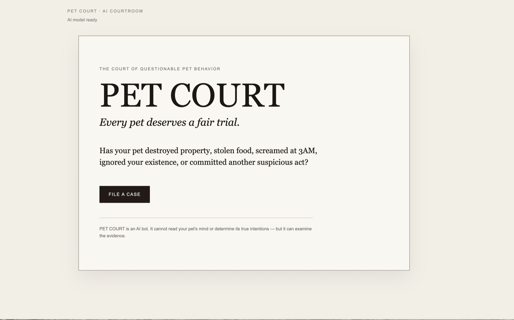
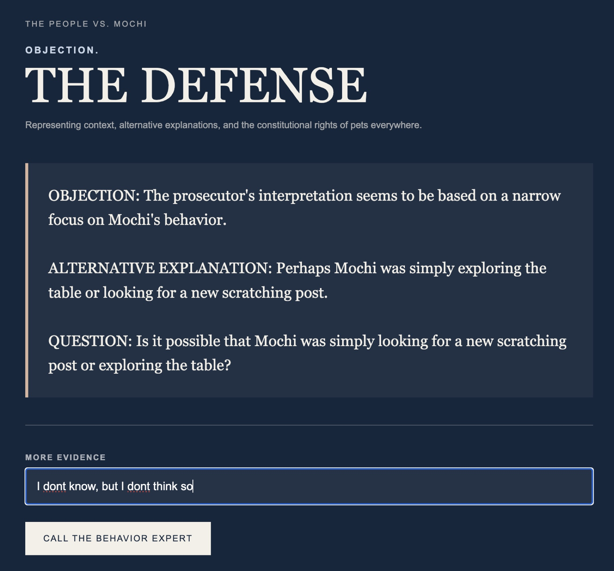

Pet Court
A conversational courtroom that asks pet owners to distinguish what they saw from the story they tell about it.
Open the courtroom prototypeThe p5.js prototype uses the original AI integration. Live responses depend on the sketch’s service availability.

One case, three voices
After a person files a charge, a dramatic prosecutor suggests a motive, the defense introduces plausible context, and a behavior expert identifies what the testimony actually supports.
Make uncertainty interactive
A short jury exercise asks players to classify statements as observations or interpretations before delivering a verdict. The human can choose guilty, not guilty, or insufficient evidence.
Research direction
The prototype uses disagreement to make assumptions visible. This thesis experiment led to a follow-up comparison of how language models respond to the same behavior under different contextual prompts.
Project documentation
